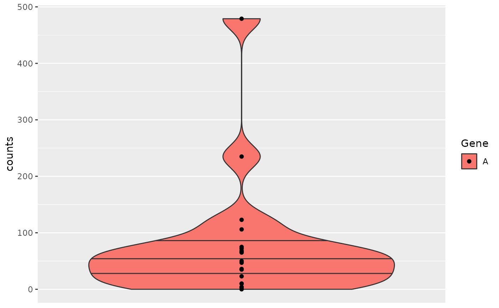
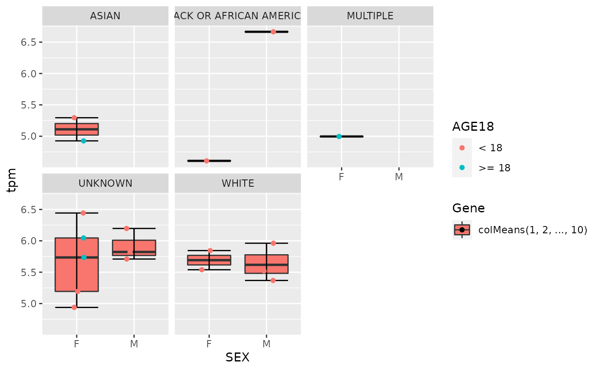
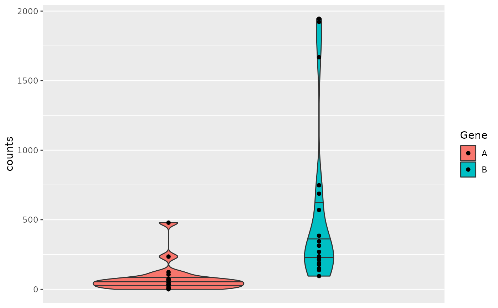

![[Experimental]](figures/lifecycle-experimental.svg)
This produces boxplots of the gene expression values of a single gene, multiple genes or a gene signature.
draw_boxplot( object, assay_name, genes, x_var = NULL, color_var = NULL, facet_var = NULL, violin = FALSE, jitter = FALSE ) h_draw_boxplot_df(object, assay_name, genes, x_var, color_var, facet_var)
Arguments
| object | ( |
|---|---|
| assay_name | ( |
| genes | ( |
| x_var | ( |
| color_var | ( |
| facet_var | ( |
| violin | ( |
| jitter | ( |
Value
The ggplot boxplot.
Functions
h_draw_boxplot_df: Helper function to prepare the data frame required for plotting.
Examples
object <- hermes_data draw_boxplot( object, assay_name = "counts", genes = gene_spec(c(A = genes(object)[1])), violin = TRUE )  object2 <- object %>% add_quality_flags() %>% filter() %>% normalize() draw_boxplot( object2, assay_name = "tpm", x_var = "SEX", genes = gene_spec(setNames(genes(object2)[1:10], 1:10), fun = colMeans), facet_var = "RACE", color_var = "AGE18", jitter = TRUE )  draw_boxplot( object, assay_name = "counts", x_var = "SEX", genes = gene_spec(genes(object)[1:3]), jitter = TRUE, facet_var = "AGE18" ) draw_boxplot( object, assay_name = "counts", genes = gene_spec(c(A = "GeneID:11185", B = "GeneID:10677")), violin = TRUE ) 